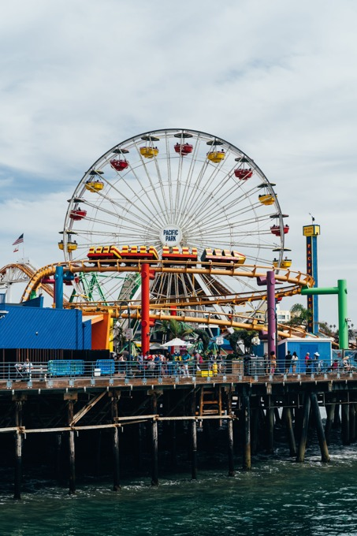
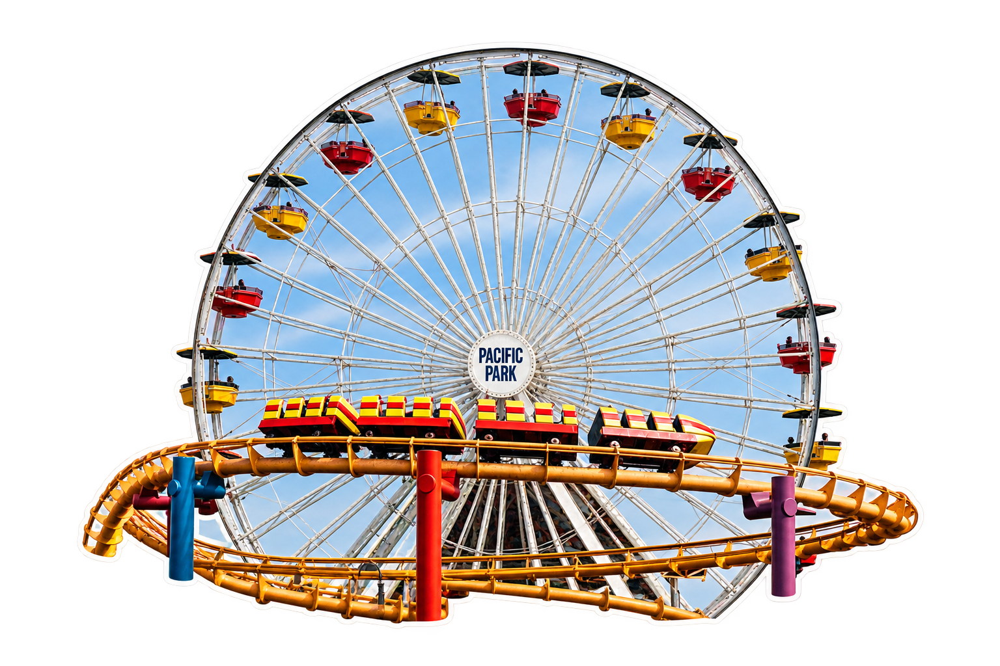
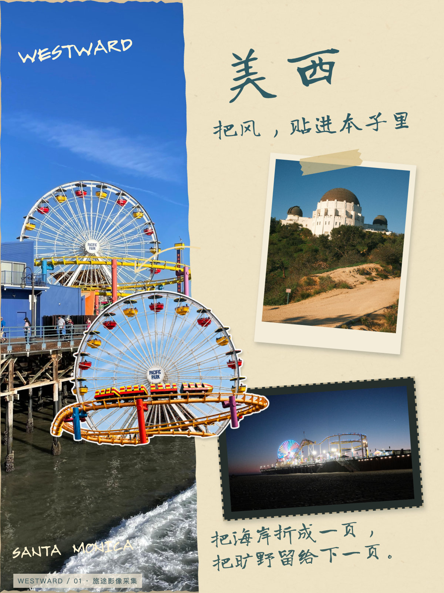
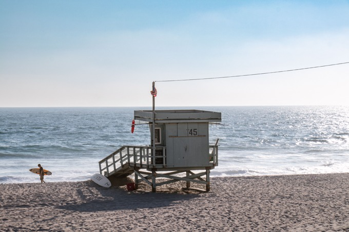
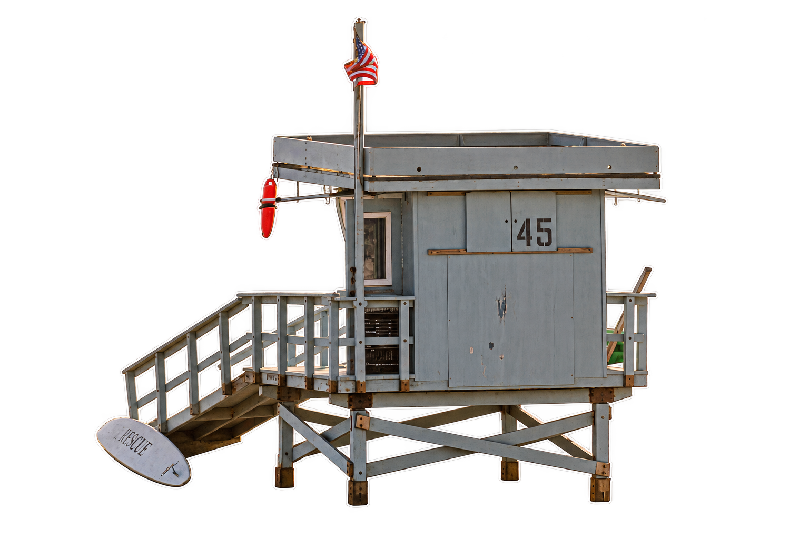
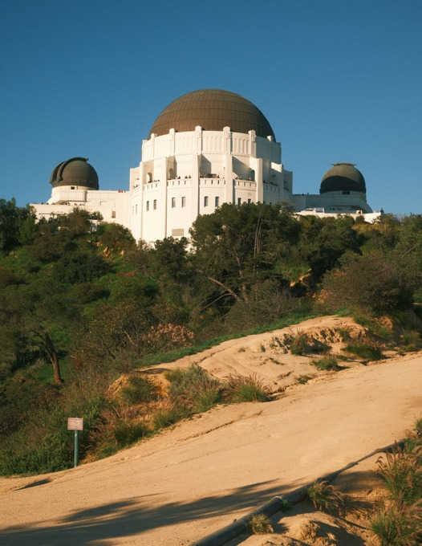
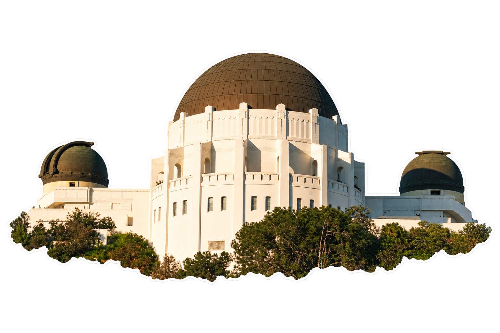
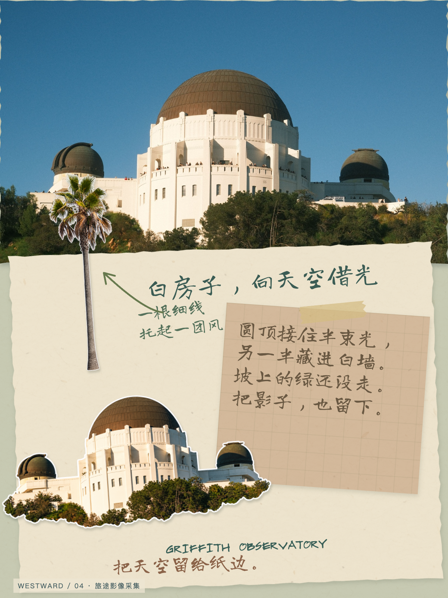
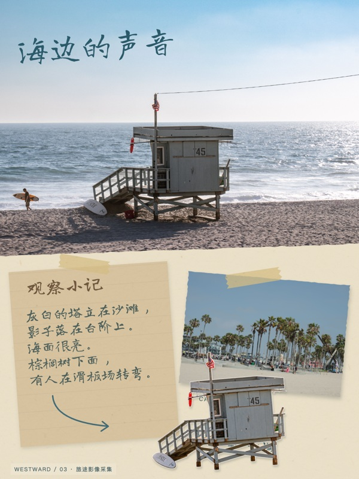
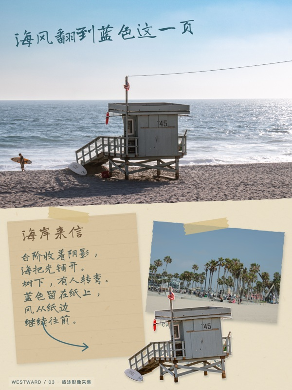

从照片到纸页
先看见远方，再决定怎样把它留下。这里保留三个主体的实际输入、衍生贴纸与成页，以及一次文案修订。
摄影来自 Pexels，作者与原始链接见手帐的“素材来源与说明”。贴纸由图像工具编辑，可能重绘结构、广告或文字；属于衍生创作，不是逐像素精确抠图。图中的人物与品牌不为产品代言。
摩天轮：让轮廓跨过纸边
轮廓与车厢色彩来自原摄影。细辐条保留局部蓝色底片，外侧是透明切边；在封面跨过海岸照片与奶油纸。



救生塔：从场景变成物件
选择整座塔、台阶、支架与旗帜。保留 45 号与自然光，让它同时连接海岸主片和滑板场小片。


天文台：完整建筑与纸片层次
三个圆顶形成可识别的轮廓。保留贴近建筑的少量灌木，不虚构被遮住的地基；与棕榈贴纸组成远近关系。



文案：由介绍，变成旁注
初稿逐项说明塔、台阶、海面与树。定稿把这些细节组织成短段，保留具体画面，留出一点余韵；同时修正孤字断行。下图为已保留初稿和最终页的真实对照。

